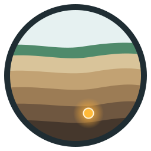

Terra Perpetua is an independent, non-profit map of the places where humanity keeps, buries or has left behind radioactive waste. Some of this material stays hazardous for hundreds of thousands of years, far longer than any institution has existed. A public, well-sourced record is part of keeping future generations safe.
Pin colour shows the status, the symbol inside the pin shows the category. Locations marked as approximate are shown at town or region level.
Every entry cites its sources: operators, regulators, national waste agencies, IAEA and NEA documents. Status information can change quickly; each entry shows the date on which it was last confirmed. Locations of nuclear power plants are based on Wikidata. If you find an error, please write to us.
Download: perpetua.json · perpetua.csv · source code on GitHub
Data: CC BY 4.0, credit "Terra Perpetua contributors, terraperpetua.org". Code: MIT. The name and logo are not covered by these licences. Map tiles © OpenStreetMap contributors.
Contact: terra@terraperpetua.org